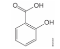
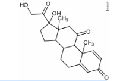
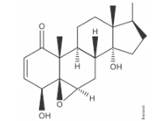

// QUIZ · FUNÇÕES ORGÂNICAS
Teste seus conhecimentos
-
Questão 01
O ácido salicílico foi originalmente descoberto devido às suas ações antipirética e analgésica. Porém, descobriu-se depois que esse ácido pode ter ação corrosiva nas paredes do estômago. Para contornar esse efeito, foi adicionado um radical acetil à hidroxila ligada diretamente ao anel aromático, dando origem a um éster de acetato, chamado de ácido acetilsalicílico (AAS), menos corrosivo, mas também menos potente.

A estrutura química do ácido salicílico, representada acima, apresenta:
-
Questão 02
A glicose e a frutose são as substâncias responsáveis pelo sabor doce do mel e das frutas. São isômeros, de fórmula C6H12O6. Na digestão, a frutose é transformada em glicose, substância capaz de gerar energia para as atividades corporais. Essas substâncias são chamadas de hidratos de carbono ou carboidratos.
Glicose e frutose possuem, respectivamente, os seguintes grupos funcionais:
-
Questão 03
A destilação seca da madeira é um processo bastante antigo e ainda muito utilizado para a obtenção de metanol, também chamado de “espírito da madeira”.
A respeito do metanol, assinale a alternativa correta.
-
Questão 04
A Prednisona é um anti-inflamatório indicado para o tratamento de doenças endócrinas, respiratórias, dentre outras. Sua estrutura está representada abaixo.

É uma função orgânica presente na estrutura da Prednisona:
-
Questão 05
Um trabalho publicado na Nature Medicine, em 2016, mostrou que a Withaferin A, um componente do extrato da planta Withania somnifera (cereja de inverno), reduziu o peso entre 20 e 25% em ratos obesos alimentados com dieta de alto teor de gorduras.

As funções orgânicas presentes na estrutura destacada são: